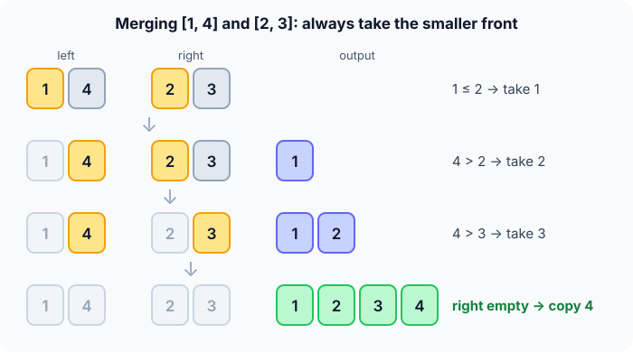

Prerequisites
- Recursion: a function that calls itself on a smaller input.
- Logarithms: $\log_2 n$ is how many times you can halve $n$ before reaching 1.
- Big-O notation (see Complexity analysis).
The analogy
Everyday analogy
Two teachers each hold a pile of exams already sorted by name. To combine them, you look at the top sheet of each pile and always take the one that comes first.
That's the merge step. Merge sort first splits the class into piles of one exam (a pile of one is always sorted), then merges piles two at a time until one sorted pile is left.
How it works
Start with one merge by hand
Splitting [4, 1, 3, 2] gives [4] [1] [3] [2]. Merging pairs gives [1, 4] and [2, 3]. Now merge those two. Guess first, then open "Check".
Example: the final merge, predict before you read
Step 1. The fronts are 1 (left) and 2 (right). Predict: which goes to the output?
Check
1 ≤ 2, so take 1. Output: [1].
Step 2. Cover the next line and guess: the fronts are now 4 and 2. Which one moves?
Check
2 is smaller. Output: [1, 2].
Step 3. The fronts are 4 and 3. Predict: what happens after this comparison?
Check
Take 3. The right half is now empty, so copy the leftover 4 without comparing: [1, 2, 3, 4].

Quick recall: Before reading further, cover the text above and say out loud: what must be true of the two halves before you can merge them this way?
Check your answer
Both halves must already be sorted. Only then is the smaller front the smallest remaining number overall.
Finish the picture
Now zoom out to the whole run on [4, 1, 3, 2].
- Splitting. Predict: how many levels of halving until every piece has one number?
Check
2 levels: 4 → 2 + 2 → 1 + 1 + 1 + 1. That's $\log_2 4 = 2$.
- Merging. Predict: how many comparisons in total across all merges?
Check
1 for
[1, 4], 1 for[2, 3]and 3 for the final merge: 5 comparisons.
Quick recall: Without scrolling up, say out loud: why did the final merge need only 3 comparisons for 4 numbers?
Check your answer
Once one half is empty, the rest of the other half is copied with no comparisons. Here the 4 was copied for free.
The rule in plain words
If the piece has one number, it's sorted: stop. Otherwise cut it in half and sort each half the same way.
Then merge: compare the two fronts, move the smaller one to the output, and repeat. When one half runs out, copy the rest of the other.
Quick recall: Before you read the code, write the three steps of merge sort in your own words. Then check below.
Check your answer
1. Split the array into two halves. 2. Sort each half with merge sort. 3. Merge the two sorted halves by always taking the smaller front.
The code
Read this code after you have done one merge by hand. It will make more sense.
/* Merge sorted a[lo..mid) and a[mid..hi) through tmp. */
void merge(int a[], int tmp[], int lo, int mid, int hi) {
int i = lo, j = mid, k = lo;
while (i < mid && j < hi)
tmp[k++] = (a[i] <= a[j]) ? a[i++] : a[j++]; /* <= keeps it stable */
while (i < mid) tmp[k++] = a[i++]; /* copy leftovers */
while (j < hi) tmp[k++] = a[j++];
for (k = lo; k < hi; k++) a[k] = tmp[k];
}void merge_sort(int a[], int tmp[], int lo, int hi) { /* sorts a[lo..hi) */
if (hi - lo < 2) return; /* one item: sorted */
int mid = lo + (hi - lo) / 2;
merge_sort(a, tmp, lo, mid);
merge_sort(a, tmp, mid, hi);
merge(a, tmp, lo, mid, hi);
}Definition
What you just did, in one line: merge sort splits the array into halves, sorts each half recursively, and merges the two sorted halves in linear time.
graph TD
A["4 1 3 2"] -->|split| B["4 1"]
A -->|split| C["3 2"]
B --> D["4"]
B --> E["1"]
C --> F["3"]
C --> G["2"]
D & E -->|merge| H["1 4"]
F & G -->|merge| I["2 3"]
H & I -->|merge| J["1 2 3 4"]
[1, 4] and [2, 3].)How fast is it?
Quick recall: Before looking at the formula, predict: on one level of the diagram, how many numbers get moved by all the merges together?
Check your answer
All $n$ of them: every level merges the whole array, just in different-sized pieces.
Halving gives $\log_2 n$ levels, and each level moves all $n$ numbers once. Multiply the two:
$$\underbrace{n}_{\text{work per level}} \times \underbrace{\log_2 n}_{\text{levels}} \;=\; O(n \log n).$$Nothing here depends on the order of the input, so the best, average and worst cases are all the same.
| Best | Average | Worst | Extra space | Stable | In-place |
|---|---|---|---|---|---|
| $O(n \log n)$ | $O(n \log n)$ | $O(n \log n)$ | $O(n)$ | Yes | No |
Warning
Array merge sort needs the $O(n)$ scratch array tmp, so it is not in-place. On a machine short of memory, that can rule it out.
Exam tip
Merge sort is stable only if the merge takes from the left half on ties (<=). Change it to < and equal items can swap order.
Common mistakes
- Forgetting to copy the leftovers after one half runs out, which silently loses numbers.
- Using
<instead of<=in the merge, which breaks stability. - Mixing up range ends: this code uses half-open ranges
[lo, hi), so the base case ishi - lo < 2.
Try it yourself
Exercise 1 (warm-up)
Merge [2, 5] and [1, 3] by hand. What is the result, and how many comparisons did you make?
Hint
Always compare the two fronts. Stop comparing as soon as one side is empty.
Answer
[1, 2, 3, 5] with 3 comparisons (2 vs 1, 2 vs 3, 5 vs 3). Then 5 is copied for free.
Exercise 2 (a bit harder)
For $n = 16$, how many levels of splitting are there, and how many times is a number copied into tmp in total? Write your answer down before you open it.
Show answer
$\log_2 16 = 4$ levels, and each level copies all 16 numbers once: $16 \times 4 = 64$ copies.
Did you know?
Did you know?
John von Neumann described merge sort in 1945, which makes it one of the oldest computer algorithms still in daily use.
It's also how databases sort data too big for memory: they sort chunks that fit, write them to disk, then merge the chunks. That's why it's worth knowing beyond exams.
Key points to remember
If you remember one thing from each line, remember the because.
- The merge works because both halves are sorted, so the smaller front is always the smallest number left.
- It is $O(n \log n)$ in every case because there are $\log_2 n$ levels and each moves all $n$ numbers.
- It needs $O(n)$ extra space because the merge writes into a scratch array.
- It is stable because ties are taken from the left half first.
- It suits linked lists and huge files because merging only reads each sequence front to back.
Self-check questions
Answer these in order, out loud. They follow the page, so your answers become the script of your video.
- How is merging like combining two sorted piles of exams?
Sample answer
You look at the top sheet of each pile and always take the one that comes first. You never need to look deeper, because each pile is already in order.
- Walk through merge sort on [4, 1, 3, 2].
Sample answer
Split to [4] [1] [3] [2], merge pairs into [1, 4] and [2, 3], then merge those: take 1, 2, 3, and copy 4, giving [1, 2, 3, 4].
- Why does the merge use
<=instead of<?A good answer mentions which half wins a tie.
Sample answer
On a tie it takes the element from the left half, which came first in the input. That keeps equal items in their original order, so the sort is stable.
- So what is merge sort, in one sentence?
Sample answer
It splits the array in half, sorts each half recursively, and merges the two sorted halves.
- Why is merge sort $O(n \log n)$?
A good answer counts the levels and the work per level.
Sample answer
Halving gives $\log_2 n$ levels, and each level's merges together move all $n$ numbers once. So the total is $n \log n$.
- What are its best, average and worst cases, and its extra space?
Sample answer
$O(n \log n)$ in all three cases, because the work doesn't depend on the input order. Extra space is $O(n)$ for the scratch array.
- Why is it not in-place, and when does that not matter?
Sample answer
The merge writes into a separate array of size $n$. On linked lists, you can merge by relinking nodes, so no extra array is needed.
- When would you pick merge sort over quick sort?
Sample answer
When you need stability or a guaranteed $O(n \log n)$ worst case, or when sorting linked lists or files too big for memory. Quick sort is usually faster on plain arrays in RAM.
- If you had to teach this to a friend in 2 minutes, what would you leave out, and why?
Sample answer
I'd leave out the half-open ranges and the exact copy count. I'd keep "split until size one, then merge by taking the smaller front", the split/merge picture, and "$O(n \log n)$ always, stable, needs $O(n)$ memory".
External resources
- VisuAlgo: Sorting: pick "MER" and watch the split and merge phases.
- GeeksforGeeks: Merge sort: an article with code and a recursion-tree picture.
- Wikipedia: Merge sort: variants, including bottom-up and external merge sort.
- MIT OCW 6.006 Introduction to Algorithms: university lectures that cover merge sort.
Videos
- YouTube: merge sort as a folk dance: the AlgoRythmics video for merge sort.
- YouTube search: merge sort explained: pick a short walkthrough.